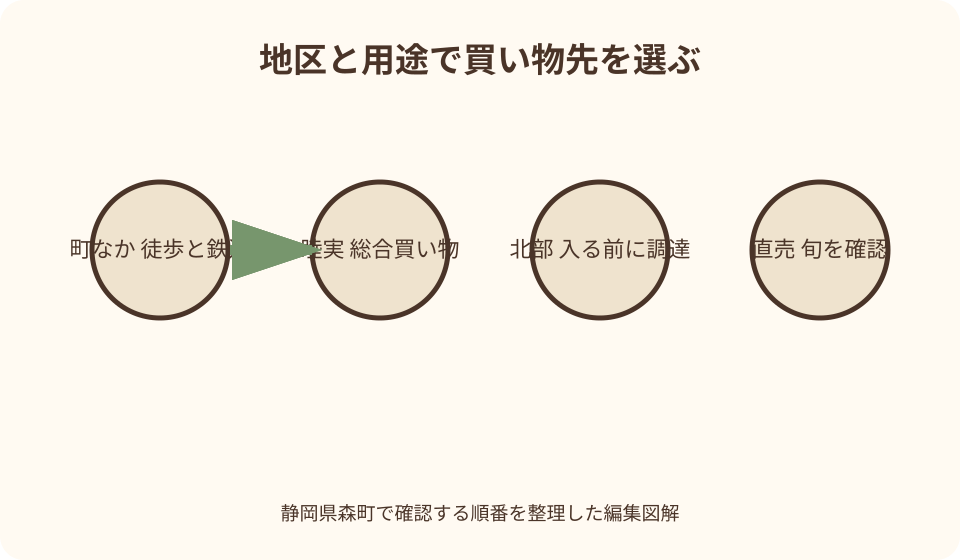
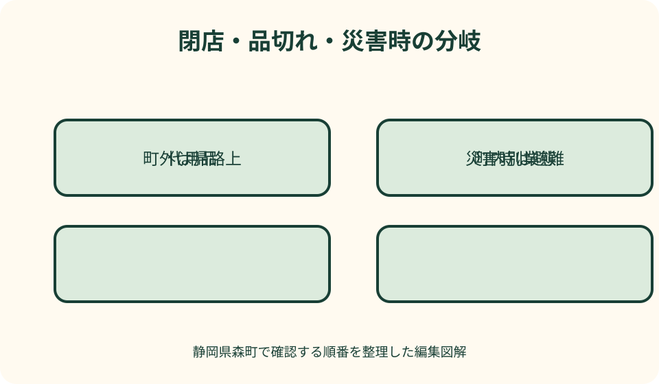

森町生活・買い物｜最終確認 2026-08-10
静岡県森町のスーパー・食料品買い物｜地区と用途から選ぶ生活ガイド
静岡県森町で食料品を買う時は、店名の一覧より、現在いる地区と次に向かう場所を先に見ます。遠州森駅や町役場に近い町なか、睦実方面の総合スーパー、北部や山間の宿泊・体験先では、使える交通と買い足せる品が同じではありません。生鮮、加工品、日用品、地場農産物を一店舗で必ずそろえられるとは考えず、各店公式で営業、休業、取扱い、決済を確認します。キャンプ客は山間部へ入る前、災害時は必要量だけを買い、店が閉まれば町外を含む安全な代案へ切り替えます。

買い物は地区・品目・帰路の三点から決める
最初に現在地を、遠州森駅と町役場に近い町なか、睦実方面、北部・山間部のどこかに分けます。行政区分ではなく買い物動線を考えるための整理です。
次に必要品を、生鮮、常温食品、冷凍・冷蔵品、飲料、洗剤や紙類などの日用品、地場農産物へ分けます。店名から全品の取扱いを推測しません。
最後に、帰宅、宿、キャンプ場、観光地のどこへ向かうかを決めます。冷蔵品を積んだまま観光を続けず、保冷できる移動順にします。
本記事は筆者が店舗を利用して比較したランキングではありません。2026年8月10日に確認した町、店舗、JA、観光協会の案内から確認手順を示します。
町なかは遠州森駅と役場を基準に歩行距離を見る
町なかでは、遠州森駅、町役場、宿など自分の起点から店舗までを地図で確認します。駅から近く見えても、荷物を持つ帰路まで同じ負担とは限りません。
食品店や直売所を複数回る場合は、生鮮や冷蔵品を最後にします。午前に買った肉、魚、乳製品を車内や手荷物で長く持ち歩きません。
徒歩では、米、飲料、調味料、紙製品の重量を一度に増やさず、キャリーや自転車の積載条件を守ります。子ども連れは手をつなげる荷物量へ抑えます。
町なかの店が休みなら、近くの別店が同じ商品を扱うとは断定しません。常温品で代用する、日を変える、交通を確認して睦実や町外へ移る順で考えます。
睦実方面の総合スーパーは公式店舗ページを起点にする
ピアゴ森店はユニーの公式店舗ページで所在地、営業案内、チラシ、専門店、アクセスを確認できます。本記事へ固定時刻や取扱商品を書き写さず、訪問日に読みます。
食品以外の日用品や専門店を同じ建物で探せる可能性がありますが、売場、在庫、サービスは店舗へ確認します。欲しい銘柄やサイズの確保を保証しません。
ウェブチラシは買い物計画の参考です。表示期間、対象店舗、数量、利用条件を読み、画面にある商品が来店時に残るとは考えません。
駐車場では入口に近い区画を探して周回せず、場内の矢印、歩行者、カート置場を優先します。大型の買い物は積載場所を確保してから出発します。
森の市はスーパーではなく地場農産物の直売目的で使う
JA遠州中央の森の市は、地元の野菜、果物、特産品を扱う直売所として公式に案内されています。総合スーパーと同じ品ぞろえを期待しません。
旬のレタス、とうもろこし、茶、米、次郎柿などの紹介があっても、季節、天候、入荷で数量は変わります。目当ての品は来店前に問い合わせます。
営業時間や年末年始・盆の変更は、JA公式の店舗ページと直近のお知らせを確認します。観光協会ページの時刻だけを将来の営業保証に使いません。
生産者や産地を知る買い物と、夕食材料を全てそろえる買い物を分けます。直売品で足りない調味料や日用品は別の営業確認済み店舗で補います。
北部・山間部へは町なかで必要量をそろえて入る
小國神社、アクティ森、コテージ、キャンプ場などへ向かう時は、現地周辺に日常品が何でも買える店がある前提を置きません。町なかで確認してから進みます。
買い忘れで山間道路を往復すると、暗さ、雨、動物、疲労の負担が増えます。食材、飲料、燃料、衛生用品を出発前の一覧で消します。
観光施設の販売所は、土産や地場品を扱っても、宿泊用の肉、野菜、朝食、洗剤まで保証する店ではありません。施設公式で取扱いを確認します。
現地に着いて不足が判明したら、営業中の店へ無理に急がず、献立を簡単にする、施設へ相談する、常温の予備食を使う順で対応します。
営業時間・休業日は当日の公式情報で確定する
検索結果の営業時間は、短縮営業、棚卸し、年末年始、荒天、設備不良を反映しない場合があります。店舗公式のお知らせと連絡先を優先します。
開店直後なら品が全てそろう、閉店前でも惣菜が残るとは限りません。営業時間と在庫は別の情報として扱います。
電話確認では、今日営業しているか、希望品の売場があるか、取置き可能か、閉店間際でも対応できるかを分けて尋ねます。取置きを当然のサービスにしません。
臨時休業なら入口で待ち続けず、第二候補へ移ります。移動時間が大きい場合は、購入品を減らし、翌日に変更することも代案です。

生鮮・冷凍・日用品は売場ではなく保存から選ぶ
肉、魚、乳製品、総菜は、買ってから冷蔵できるまでの時間を先に見ます。保冷剤とクーラーボックスがなければ、観光前に購入しません。
冷凍品は冷蔵品より温度管理が厳しく、宿の冷凍室が小さい場合があります。設備を確認できない時は常温品か当日使い切る量へ変えます。
野菜は直売品とスーパー品を優劣で並べません。使う日、量、洗浄、切る道具、保存場所に合う方を選びます。
紙類、洗剤、電池、虫よけなどの日用品も、店舗によって容量と取扱いが違います。キャンプ用燃料や刃物は施設規則と運搬方法を確認します。
決済は現金・カード・コードを一つずつ確認する
店舗公式に決済案内があっても、売場、専門店、直売所で使える方法が同じとは限りません。会計する運営者ごとに確認します。
コード決済は通信、アプリ、残高、端末障害で使えない場合があります。カードだけ、携帯だけに頼らず、必要最小限の現金を分けて持ちます。
商品券、ポイント、クーポンは対象店舗、期間、対象商品、画面提示を読みます。画像を印刷すれば使えるとは限りません。
災害や停電ではキャッシュレス端末が動かない可能性があります。ただし不安から大量の現金や商品を抱えず、公的情報と店の案内に従います。
車の買い物は順路・駐車・車内温度を管理する
車は町なかと睦実、山間部を移動しやすい一方、買い回りで距離が増えます。最後に冷蔵品を買い、そのまま冷蔵設備へ向かう順にします。
駐車場の台数が掲載されても空車を保証しません。満車時は路上や隣接私有地へ停めず、係員の誘導または別時刻を選びます。
夏の車内へ食品、薬、電池、スプレー、子ども、ペットを残しません。短時間の会計でも車内温度は安全の根拠になりません。
大量の米、飲料、薪などは、車の積載、視界、タイヤ、荷崩れを確認します。後部座席へ無固定で積み上げず、必要なら購入回数を分けます。
鉄道・バス利用は重量と帰りの便から逆算する
森町公式の公共交通ページから、天竜浜名湖鉄道、路線バス、町営バス、タクシーの運行主体へ進みます。店舗名だけで最寄り交通を判断しません。
遠州森駅に近い候補でも、買い物後の列車時刻、ホームまでの移動、荷物の上げ下ろしを含めます。飲料や米を徒歩距離だけで選びません。
バスは運行日、停留所、帰りの便を先に見ます。冷蔵品を持って長く待つ計画を避け、保冷バッグと持てる重量を決めます。
運休や乗り遅れでタクシーを使う場合も、即時配車を保証しません。手配できなければ品数を減らし、安全な場所で次の便を待ちます。
キャンプ・コテージの買い出しは献立から数量化する
宿泊人数、夕食、朝食、飲料、予備食を表にし、一人分ではなく全体量を計算します。BBQだけ決めて朝の食事と調味料を忘れないようにします。
施設へ、冷蔵・冷凍容量、調理器具、食器、炊飯、洗剤、ごみ、火気を確認します。キッチンや炊事場があることを完全装備の意味にしません。
肉や魚は保冷し、加熱前後の道具を分けます。衛生管理に不安がある時は、常温食品や加熱工程の少ない献立へ変更します。
雨や体験の延長で調理開始が遅れる場合に備え、すぐ食べられる予備食を用意します。施設外で夜遅くまで店を探す代案にはしません。
宿泊者は朝食・保冷・ごみの出口まで確認する
素泊まりでは夕食だけでなく翌朝の飲料と食事を確保します。朝に町内店が必ず開くとは考えず、宿の出発時刻まで保存できる品を選びます。
客室冷蔵庫へ入らない量を買わず、共用冷蔵庫は名前、容器、利用時間の規則を聞きます。冷凍庫があると思い込まないことが必要です。
宿やキャンプ場のごみ処理は施設の規則に従います。町の家庭ごみ集積所へ旅行者が無断で置くことはせず、持ち帰り袋を用意します。
町公式の分別表は住民の家庭ごみ処理を確認する資料です。旅行中は施設の分類が別に示される場合があるため、管理者の説明を優先します。
災害時は買い物より情報・避難・備蓄を優先する
地震、大雨、停電などでは、営業店を探して移動する前に、森町の防災情報、避難情報、道路、交通を確認します。避難指示があれば買い物へ向かいません。
日頃から水、常温食品、衛生用品を家庭の人数に合わせて備え、期限前に使って補充します。災害発生後の店頭だけを備蓄手段にしません。
一度に大量購入すると、他の人へ必要品が行き渡りにくくなり、自分も保存しきれません。家族に必要な量だけを買い、買占めを避けます。
店が営業していても、入店制限、現金のみ、数量制限、品切れがあり得ます。係員の案内へ従い、怒鳴る、割り込む、別の被災地区へ移動する行為を避けます。
閉店・品切れ時は四つの代案を順に試す
第一は同じ店の別商品で代用することです。銘柄を変える、冷凍を常温へ変える、献立を簡単にする方法を先に検討します。
第二は営業確認済みの町内別業態です。スーパー、直売所、コンビニは役割が異なるため、必要品があるか電話や公式ページで確かめます。
第三は袋井、掛川など町外の店です。帰路や宿への動線上にあり、閉店へ間に合い、安全に移動できる時だけ選びます。
第四は購入をやめることです。荒天、夜間、疲労、運休時に食材を探し続けず、手元の予備食、施設相談、翌日の購入へ切り替えます。

地場農産物は生産者表示と食べる日から選ぶ
森の市などで野菜や果物を選ぶときは、品名、生産者、産地、内容量、保存表示を確認します。見慣れない品種は調理法と食べ頃を売場で質問します。
贈答用と自宅用では、外観、熟度、持ち歩く時間が違います。すぐ食べる品と数日後に使う品を同じ基準で選ばず、帰宅日から逆算します。
朝に多く並ぶ、特定曜日なら必ず買えると決めつけません。農産物は収穫と出荷で変わるため、目的の商品が必要なら当日の公式・店舗連絡先で確認します。
生産者名がある商品でも、農園へ無断で直接訪問したり畑へ入ったりしません。追加購入や問い合わせは直売所が示す方法を使います。
精算後に冷蔵品・常温品・日用品を積み分ける
買物袋は売場の分類ではなく、帰宅までの保管条件で分けます。冷蔵・冷凍品、つぶれやすい農産物、洗剤等の日用品を同じ袋へ入れません。
保冷剤や氷を利用できる場合も、提供条件、袋、食品へ直接触れてよいかを店舗で確認します。長時間の観光を追加して保冷時間を超えないようにします。
車では荷室の直射日光、転倒、汁漏れを防ぎ、停車中の高温を見込みます。卵や葉物を重い飲料の下へ置かず、保冷箱が走行中に動かない位置へ固定します。食品を積んだ後は小國神社やアクティ森へ長く立ち寄らず、宿や自宅への移動を優先します。
鉄道やバスでは、膝上に安全に置ける重量と大きさへ抑え、通路や乗降口を塞ぎません。予定より買物が増えたら、配送可否を店へ聞くか品数を減らします。
良い点——日常品と地場農産物を目的別に選べる
良い点は、総合的な食料品・日用品の買い物と、森町産の旬を探す直売の目的を分けられることです。用途が違うため優劣を付ける必要がありません。
町なかの鉄道、睦実方面の車動線、北部への入口を把握すると、生活者も旅行者も無駄な往復を減らせます。
店舗公式、JA公式、観光協会、町の交通・防災・ごみ情報を使い分ければ、営業だけでなく購入後の移動と処理まで確認できます。
移住下見では、品ぞろえの印象だけでなく、曜日、交通、重量、町外代案を記録できます。一度の来店を地域全体の便利さへ広げずに済みます。
注文したい点——地区別の生活買い物情報がまとまりにくい
注文したい点は、店舗、直売、公共交通、ごみ、防災の情報が運営者ごとに分かれ、買ってから持ち帰るまで一画面で確認しにくいことです。
店舗一覧には営業時間だけでなく、公式更新日、取扱い区分、決済、バス停、保冷品の持帰り目安への注意があると実用的です。
山間部の宿泊者向けには、最終買い出し地点、夜間の代案、施設の冷蔵・ごみ規則へ進む案内があると、買い忘れ往復を減らせます。
災害時は営業情報と避難情報を混在させず、まず町の緊急情報へ誘導する表示が必要です。本記事も平時と災害時を別の判断にしています。
代案・結論——買う前に保存と帰路を閉じる
出発前は、地区、品目、営業、決済、交通、保存を確認します。店舗名を決めるより、何をどこまで安全に運ぶかを先に決めます。
直売所は旬の品、スーパーは日常の食品・日用品の候補として目的を分けます。在庫と価格は訪問日の店頭または店舗回答で確定します。
キャンプや宿泊は山間部へ入る前に買い、閉店なら代用品、町内別業態、町外動線、購入中止の順に切り替えます。
結論は、買い物を会計で終わらせず、保冷、積載、調理、ごみ、帰宅まで計画することです。災害時は必要量を守り、公的情報を優先します。
大石の視点——スーパーは移住後の移動時間を測る場所
私（大石）は、移住下見でスーパーの広さより、家から往復して冷蔵庫へ収めるまでを見ます。雨の日、高齢期、車が使えない日も想像します。
一度欲しい商品があった、なかったという感想だけで評価しません。曜日、季節、価格、交通を変えて記録し、町外の代案も確認します。
直売所では大量に買うことより、使い切れる旬の一品を選び、生産地や調理法を聞くことが地域理解につながります。
この記事の確認日は2026年8月10日です。店舗、営業時間、取扱い、決済、交通、ごみ、防災情報は変わるため、利用前に公式を確認してください。
公式情報・確認先
掲載内容は次の一次情報を基礎に整理しました。営業、料金、催し、交通は変わるため、出発前または手続き前にリンク先で最新情報を確認してください。
- 暮らし・手続き（静岡県森町、2026-08-10確認）
- 森町の公共交通について（静岡県森町、2026-08-10確認）
- 森町地域防災計画（静岡県森町、2026-08-10確認）
- 森町家庭ごみ分別表、収集日カレンダー、分別ガイドブック（静岡県森町、2026-08-10確認）
- ピアゴ森店（ユニー株式会社、2026-08-10確認）
- 森の市（JA遠州中央、2026-08-10確認）
- JA遠州中央 農産物直売所 森の市（森町観光協会、2026-08-10確認）